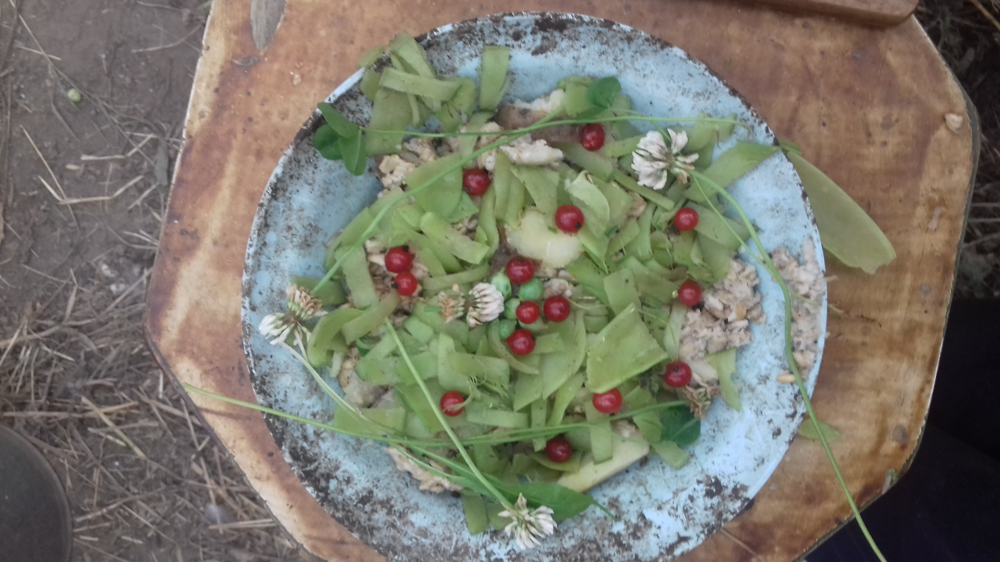
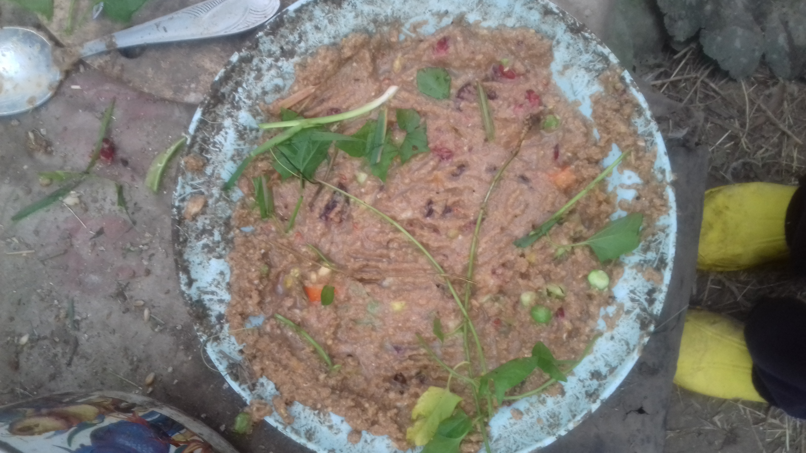
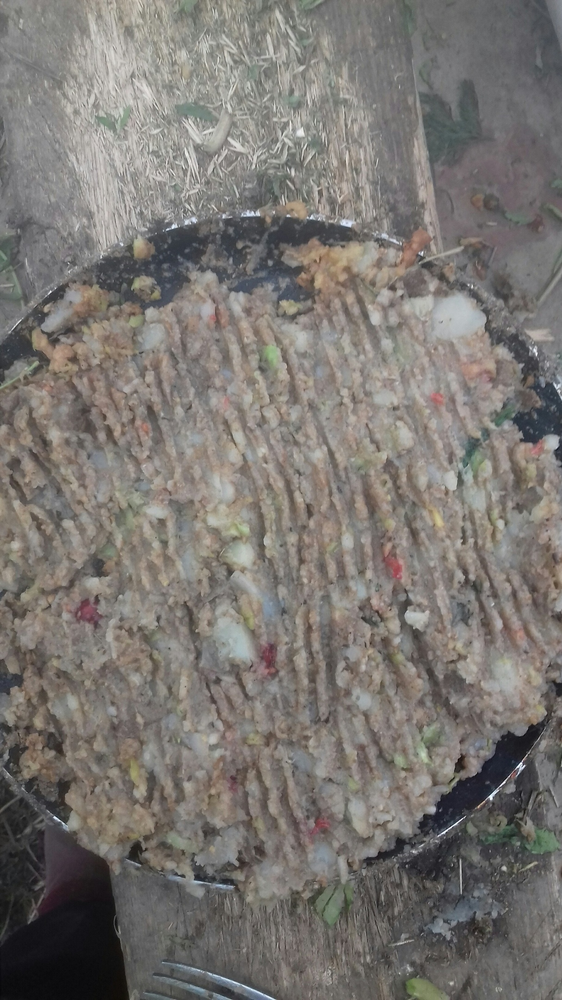
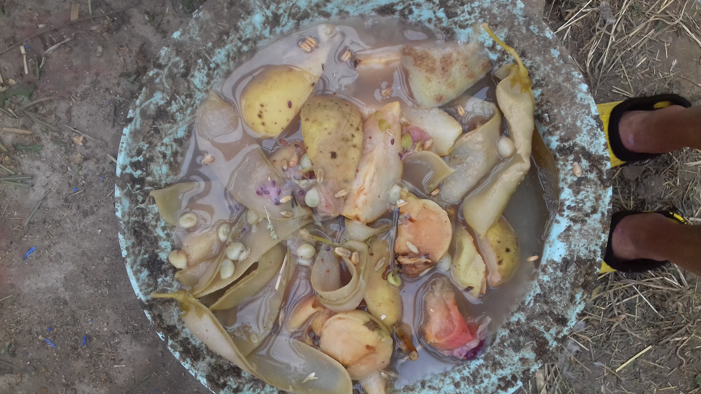

Гороховый салат.
Ингридиенты:
Для начала понадобится горох - вернее его стручки.
Закидывем их варится и когда закипят сразу выключаем. Варим до размягчения.
После того, как стручки сварились идем их нарезать
После нарезки берем тарелку и выкладываем туда кашу тонким слоем.
Тонким слоем у нас не получается, поэтому выкладываем как попало.
Бросаем на кашу порезанные стручки, и идем за клевером и красной смородиной.
Украшаем тем, что только - что собрали.
Готово! Можно подавать на стол!
Пожелаем курам Приятного аппетита!

Пюре
Ингридиенты:
Для начала нам надо пройтись по участку и найти: красную смородину, крыжовник, горох, помидор и грушу.
Когда все найдено - приступаем к готовке.
Выкладываем кашу в тарелку и бросаем туда-же крыжовник и красную смородину.
Теперь дело за вилкой. Берем вилку и разминаем то, что только - что кинули в тарелку.
Отправляем в тарелку предварительно порезав помидор и туда-же горох, опять разминаем вилкой.
Последней идет груша.
Если ее мелко не нарезать - то фиг, что с ней сделаешь.
В конце можно сделать присыпку из травы.
Готово! Куры будут рады!
Пожелаем им приятного аппетита!

Картофельно-яблочно-грушевое пюре
Ингридиенты:
Для тетьего кушанья нам понадобится: 2 небольшие груши, такие-же по размеру 2 яблока, картошка, горох и красная смородина.
Приступим к готовке. Для начала нам понадобится сделать картофельное пюре.
С помощьу вильки разминаем картошку и добавляем немного водички.
Натираем в получившееся пюре 2 груши и 2 яблока.
Потом рубим и сыпим туда горох и все хорошенько перемешиваем.
Как соус мы добавли и размяли красную смордину и также перемешали.
Готово! Куры оценили. Приятного аппетита!

Грушево-яблочно-гороховый компот
Ингридиенты:
Для этого кушанья нам нужно:3 яблока, 2 груши, 8 крыжовин, 1 лавровый лист и горох.
Приступим. Для начала кидаем горох с лавровым листом в кастрюлю и варим 30 минут,
тем временем четвертуем1 яблоки и груши
Когда горох приварися кидаем крыжовник а затем нарезаные яблоки и груши в кастрюлю.
Варим еще 30 минут. Когда все сварилось даем остыть и выклаываем в тарелку.
Готово! Куры были рады!
Приятного аппетита!
1-Режем четвертинками. Молочный суп
Ингридиенты:
Это блюдо не спроста так названо!
Приступим к готовке! Для начала ставим варится стручки на 30 мин. следом добавляем крыжовник.
Добавляем молоко, соль и ромашку.
Затем отправляем варится малину, ежевику, алычу и голубику. Для вкуса добавляем листы смородины и малины.
И варим еще 15 мин.
Готово! Куры не оценили но остались довольны!
Приятного аппетита!